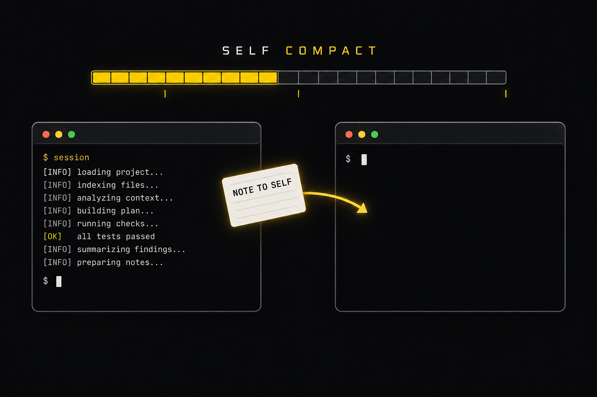

Plan: Self-Compacting Pi Agent Extension

Purpose
Build a standalone Pi (v0.85.1) coding-agent extension, self-compact.ts, that lets a long-running autonomous agent manage its own context window: it watches usage against three configurable thresholds (notice, warning, forced), nudges the agent with editable prompt files, locks every other tool once the hard limit is crossed, lets the agent hand itself off with self_compact(note_to_self), replaces Pi's summary prompt, and returns the note verbatim after compaction so real work continues with no human in the loop. The extension ships with a 20-cell context bar, two human-in-the-loop slash commands, four CLI flags, and a verification harness that proves every Definition-of-Done bullet.
Problem
Out-loop agents run until their context is exhausted. As context grows, quality drops (context rot) and every turn re-sends hundreds of thousands of tokens to a frontier model. Pi already has compaction, but it is reactive: it fires at contextWindow - reserveTokens with a generic summary prompt, the agent gets no advance warning, and nothing preserves the agent's own "what I was about to do" intent across the summary boundary. The agent can neither see its usage nor act on it, and a summary written by a detached summarizer often restarts finished work.
Solution
One extension file plus four small helper modules. Thresholds are parsed from --compact-soft-at, --compact-at, and --compact-buffer (tokens, k/m, or %), resolved against the active model's window, and capped at 90%. On every turn_end the extension reads ctx.getContextUsage(), derives a level (idle → notice → warning → forced), and delivers the matching prompt file as a steering message. At forced level every tool except self_compact is blocked in tool_call and removed from the active tool list. The agent calls self_compact({note_to_self}); the note is validated, persisted as a custom session entry, and the run ends. When the agent settles, the extension calls ctx.compact(); its session_before_compact handler generates the summary itself with the override prompt (--compact-prompt > USER_PROMPT_COMPACTION_MESSAGE.md > built-in). On session_compact the tools are restored and the note is sent back verbatim as a custom message that triggers the next turn. Failure or cancellation keeps the note and the lock; retries and reload recovery rebuild state from the session entries. A custom footer renders the 20-cell bar and level, and /self-compact-info / /self-compact-now give a human the same controls.
Relevant Files
Existing Files
/Users/indydevdan/Documents/projects/yt/self-compact/prompts/- existing
end_draft_plan.md— requirements, variables, and the Definition of Done this plan is graded against.
- existing
/Users/indydevdan/Documents/projects/yt/self-compact/ai_docs/- existing
pi-extensions.md— ExtensionAPI: registerFlag/getFlag, registerTool (terminate), tool_call blocking, sendMessage delivery modes, setFooter, appendEntry, setActiveTools. - existing
pi-compaction.md— session_before_compact / session_compact / session_compact_failed contract, serializeConversation, CompactionEntry shape. - existing
pi-session-format.md— custom entries and getBranch() scanning used for note persistence and reload recovery. - existing
pi-tui.md— footer component contract (render(width) lines, truncateToWidth, theme.fg colors). - existing
pi-rpc.md— RPC protocol used by the e2e harness (prompt, compact, get_entries, notify events). - existing
pi-custom-provider.md— streamSimple contract used to build the scripted fake model for deterministic tests. - existing
pi-sdk.md— createAgentSessionServices(extensionFlagValues) for SDK-level checks. - existing
example-extension-custom-footer.md— footer pattern copied for the context bar. - existing
example-extension-custom-compaction.md— modelRegistry.complete() summary pattern (policy differs: we keep the note and lock on failure). - existing
example-extension-structured-output.md— terminate: true tool result pattern.
- existing
New Files
/Users/indydevdan/Documents/projects/yt/self-compact/apps/claude-fable-5-1/extensions/self-compact/- new
self-compact.ts— extension entry (default export): flags, tool, commands, events, footer, compaction override, handoff delivery. - new
thresholds.ts— pure: parseTokenSpec, validateSpecs, resolveThresholds (90% cap), levelFor. - new
context-bar.ts— pure: renderContextBar (20 cells, # = ~ ! | markers), formatTokens. - new
prompts.ts— prompt file discovery, live-value templating, built-in fallbacks, compaction prompt precedence. - new
state.ts— handoff state types, session-entry persistence shape, recoverHandoff(entries) pure reducer.
- new
/Users/indydevdan/Documents/projects/yt/self-compact/apps/claude-fable-5-1/.pi/self-compact/- new
USER_PROMPT_SOFT_SELF_COMPACT.md— optional heads-up with live usage values (runs from --compact-soft-at). - new
USER_PROMPT_WARNING_SELF_COMPACT.md— stern "compact soon, hard cutoff at ..." message (runs from --compact-at). - new
USER_PROMPT_COMPACTION_MESSAGE.md— replacement summary system prompt (overridden by --compact-prompt).
- new
/Users/indydevdan/Documents/projects/yt/self-compact/apps/claude-fable-5-1/tests/- new
unit/thresholds.test.ts— parsing, defaults, cap, zero buffer, rejections. - new
unit/context-bar.test.ts— exact bar strings for the DoD examples. - new
unit/prompts.test.ts— templating, lookup order, precedence. - new
unit/state.test.ts— recovery reducer over session entries. - new
harness/fake-provider.ts— scripted Pi provider (streamSimple) with controllable usage and summary failures. - new
harness/rpc-client.ts— spawn `pi --mode rpc`, LF-framed JSONL, event waiters. - new
e2e/lifecycle.test.ts— notice → warning → forced lock → self_compact → compaction → note verbatim → result.txt = done. - new
e2e/failure-recovery.test.ts— failed compaction keeps note + lock; /self-compact-now retry with saved note; reload recovery via --session. - new
e2e/launch-variants.test.ts— three DoD launch commands + /self-compact-info resolved thresholds; /compact escape hatch; --compact-prompt literal. - new
e2e/real-model.test.ts— live claude-haiku-4-5 run: forced lock → self_compact → continuation writes result.txt.
- new
/Users/indydevdan/Documents/projects/yt/self-compact/apps/claude-fable-5-1/- new
package.json— private; npm scripts for unit, e2e, verify. No runtime dependencies (Pi supplies its packages via jiti aliases). - new
tsconfig.json— typecheck config with path aliases into the global Pi install. - new
scripts/verify.sh— runs every check and writes verification/ artifacts. - new
README.md— launch commands, flags, commands, prompt files, verification results. - new
verification/REPORT.md— DoD checklist with actual results and blockers.
- new
Database Models
No database is involved. State lives in Pi session JSONL as custom entries (see Phase 4).
Existing Models
New Models
Implementation Phases
IMPORTANT: Execute every phase and task step by step, in order, top to bottom.
Status markers: [] idle · [wip] in progress · [x] complete · [f] failed. All start as []; the Build Plan workflow updates them as it works. Check off work at BOTH levels: mark each individual task/checklist box [x] as it lands, and mark a phase [x] ONLY once every task + test inside it is [x] (or [f]). A phase header must never be [x] while it still contains unchecked boxes.
Phase Summary
| Phase | Purpose | Done when |
|---|---|---|
| 1. Scaffold and Threshold Engine | Working dir, flags, token/percent parsing, 90% cap, defaults, validation. | Extension loads via pi -e; threshold unit tests pass; invalid specs rejected. |
| 2. Context Bar and Footer UI | Pure 20-cell bar renderer plus a level-colored custom footer. | Bar tests reproduce the DoD strings exactly; footer renders in TUI. |
| 3. Prompt Engineering Files | Three editable prompt files, live-value templating, precedence rules. | Files exist in .pi/self-compact/; loader tests pass; flag overrides file overrides built-in. |
| 4. self_compact Tool and Handoff State Machine | Tool, lock, idle-only compaction, summary override, note return, failure/retry/reload recovery. | Deterministic lifecycle e2e passes end to end with result.txt = done. |
| 5. HIL Commands and Renderers | /self-compact-info, /self-compact-now, message/entry/tool renderers. | Info shows all fields with no LLM turn; now includes saved note on retry; /compact untouched. |
| 6. Verification Harness and Artifacts | Fake provider, RPC client, e2e suites, real-model run, verify.sh, report. | Every DoD bullet has a passing check and an artifact under verification/. |
[x] Phase 1: Scaffold and Threshold Engine
Create the working directory, a minimal package.json (no runtime deps), and the threshold module. All helper modules use erasable TypeScript only (no enums, namespaces, or parameter properties) and import each other with explicit .ts specifiers so both Pi's jiti loader and Node 24's native type stripping (used by node --test) can run them unchanged.
1. Scaffold the working directory
[x]Createapps/claude-fable-5-1/withextensions/self-compact/,.pi/self-compact/,tests/{unit,harness,e2e},scripts/,verification/.[x]Writepackage.json("private": true,"type": "module", scripts:test:unit,test:e2e,test:real,verify). No dependencies.[x]Writetsconfig.jsonwithpathsmapping@earendil-works/pi-coding-agent,@earendil-works/pi-ai,@earendil-works/pi-tui, andtypeboxto the global Pi install sotsc --noEmitcan typecheck the extension.
2. Threshold module thresholds.ts
[x]parseTokenSpec(raw): accepts"270000","100k","1.5m","20%","0"; returns{ kind: "tokens", value }or{ kind: "percent", value }. Rejects blank, negative, NaN, percent > 100, and fractional plain token counts with a descriptiveError.[x]DEFAULT_SPECS = { softAt: "225k", at: "250k", buffer: "20k" }(forced = 270k). TrackfromDefaultsso window-relative clamping applies only to defaults.[x]validateSpecs(specs)at load time: same-unit comparisons (soft ≤ warn; warn ≤ 90% when percent) throw immediately sopireports the error before a session starts.[x]resolveThresholds(specs, contextWindow): tokens as-is, percent × window (floor);cap = floor(0.9 × window);forced = min(warn + buffer, cap). Explicit settings with soft > warn or warn > cap return{ error }(rejected: extension stays inert except/self-compact-info). Defaults that exceed a small window are clamped (warn = cap, soft = min(soft, warn)) with a one-time warning.[x]levelFor(tokens, thresholds)→"idle" | "notice" | "warning" | "forced" | "unknown"(unknown when tokens is null right after compaction).[x]Register flags in the entry:compact-soft-at,compact-at,compact-buffer,compact-prompt(alltype: "string", with descriptions that appear inpi --help).
3. Testing Strategy
Node 24 built-in test runner (node --test) with native TypeScript type stripping; pure functions only, no Pi import. Edge cases: 0 buffer, 90% exactly, mixed units (tokens vs percent), window smaller than defaults, 1,000,000-token window from the DoD.
[x]node --test tests/unit/thresholds.test.ts— defaults on 1M → 225000/250000/270000;100k/200k/50kon 1M → 100000/200000/250000;20%/50%/10%on 1M → 200000/500000/600000;20%/50%/0→ forced == warn;85%/10%→ forced capped at 900000;95%warn rejected;-1,abc,1.5rejected.[x]pi --no-extensions -e extensions/self-compact/self-compact.ts --help | grep -A5 "Extension CLI Flags"— all four flags listed.
[x] Phase 2: Context Bar and Footer UI
A pure renderer produces the exact bar string; the footer is a thin TUI wrapper that colors it by level. Cell i covers (5i, 5(i+1)] percent. Used cells are # when inside the cached share and = otherwise; free cells are -. Threshold markers overlay the cell whose upper bound equals the threshold percent (index ceil(pct/5) - 1): ~ soft, ! warning, | forced; when two markers land on the same cell the stronger one wins (| > ! > ~), which is how a zero buffer shows a single |.
1. Bar renderer context-bar.ts
[x]renderContextBar({ usedPct, cachedPct, softPct, warnPct, forcedPct, cells = 20 })returns{ bar, percentLabel, text }wheretextis[...] NN%. Null usage renders 20-cells with markers and--%.[x]formatTokens(n)→120.0k/1.0Mstyle for footer and info output.[x]usageSnapshot(ctx)in the entry: tokens and percent fromctx.getContextUsage(); cached tokens from the latest post-compaction assistant messageusage.cacheReadonctx.sessionManager.getBranch().
2. Footer
[x]Insession_start(TUI only:ctx.mode === "tui") callctx.ui.setFooter(...): line 1 = bar colored by level (idle dim, notice accent, warning warning, forced error) +used/window+ threshold summary + level tag / handoff status; line 2 = cwd, session name, ↑ in / ↓ out / R cache, cost, model (rebuilt fromgetBranch()like the custom-footer example). Every line goes throughtruncateToWidth.[x]Request a re-render onturn_end,agent_settled,model_select, and state changes (keep atui.requestRenderhandle from the factory).[x]Non-TUI modes skip the footer; RPC mode getsctx.ui.setStatus("self-compact", text)instead.
3. Testing Strategy
Exact-string unit tests for the renderer; a TUI smoke test via tmux capture in Phase 6.
[x]node --test tests/unit/context-bar.test.ts—[###~====-!-|--------] 40%for used 40 / cached 20 / 20-50-60; markers at cells 1, 3, 4 for 10/20/25 (1M window with 100k/200k/50k); single|at 50% when buffer is 0;[--------------------] --%with markers for null usage; 100% usage fills all cells but keeps markers.
[x] Phase 3: Prompt Engineering Files
Three Markdown files live in apps/claude-fable-5-1/.pi/self-compact/. They are read fresh on every use so edits apply live. Lookup order: <cwd>/.pi/self-compact/<name>, then <extension dir>/../../.pi/self-compact/<name> (so the launch works from any cwd), then a built-in default string. Placeholders use {{name}} syntax.
1. Write the prompt files
[x]USER_PROMPT_SOFT_SELF_COMPACT.md— optional heads-up: usage{{used_tokens}}({{used_percent}}) of{{context_window}}; warning at{{warning_tokens}}, hard cutoff at{{forced_tokens}}; suggests compacting at a natural checkpoint; explains the note format (goal, done, in progress, exact paths, test results, next action); tools remain available.[x]USER_PROMPT_WARNING_SELF_COMPACT.md— stern: "time to compact soon; hard cutoff at {{forced_tokens}} ({{forced_percent}}), {{remaining_to_forced}} tokens left; finish the current atomic step, write the note, call self_compact now"; states that other tools will be blocked at the cutoff.[x]USER_PROMPT_COMPACTION_MESSAGE.md— replacement summary system prompt: structured sections (Goal, Constraints, Progress done/in-progress/blocked, Key Decisions, Next Steps, Critical Context, read/modified files), "do not invent completed work", "preserve exact paths and commands", "the agent's own note is delivered separately, do not duplicate it".[x]Built-in forced message (not a file): "hard cutoff reached; every tool except self_compact is blocked; write your note and call self_compact now".
2. Loader prompts.ts
[x]loadPromptFile(name, searchDirs)→{ text, source: path | "builtin" }.[x]renderTemplate(text, values)replaces{{used_tokens}},{{used_percent}},{{cached_tokens}},{{context_window}},{{soft_tokens}},{{soft_percent}},{{warning_tokens}},{{warning_percent}},{{forced_tokens}},{{forced_percent}},{{remaining_to_forced}},{{cycle}},{{note_max_chars}}; unknown placeholders are left as-is.[x]resolveCompactionPrompt({ flag, searchDirs }):--compact-promptliteral > file > built-in; returns{ text, source: "flag" | path | "builtin" }.[x]Built-in defaults for all three prompts are embedded as constants so the extension still works if the files are deleted.
3. Testing Strategy
Unit tests over a temp directory tree: file found in cwd, file found in extension fallback, built-in fallback, placeholder rendering, and precedence with the flag.
[x]node --test tests/unit/prompts.test.ts— all lookup and templating cases pass; the three real files contain their required placeholders.
[x] Phase 4: self_compact Tool and Handoff State Machine
The core. State is one in-memory object mirrored to session custom entries (customType: "self-compact") on every transition so a reload rebuilds it. Locking is enforced in tool_call (authoritative, per Pi's preflight contract). The active tool list is deliberately left untouched: narrowing it made Pi answer "Tool X not found" before tool_call ran, which hid the reason from the model (see Amendments).
1. State model state.ts
[x]Types:HandoffStatus = "none" | "pending" | "compacting" | "failed" | "done";SelfCompactState = { level, thresholds, handoff: { status, note, savedAt, attempts, lastError }, cycle, locked, savedActiveTools, noticeSentCycle, warningSentTurn, forcedSentCycle, turnCounter }.[x]Persistence shape forpi.appendEntry("self-compact", data):{ kind: "handoff", status, note, cycle, attempts, lastError, at }.[x]recoverHandoff(branchEntries)pure reducer: latest handoff entry wins; acompactionentry after a pending/compacting/failed entry means the summary landed but the note was never delivered → status"done-undelivered"so the note is delivered on the next idle instead of compacting again;"done"→ nothing pending.
2. The tool
[x]pi.registerTool({ name: "self_compact", parameters: { note_to_self: string } })with apromptSnippetandpromptGuidelinesthat name the tool explicitly and describe the note contents.[x]execute: trim; blank →throw Error("note_to_self must not be blank"); length > 24,000 chars →throw Error("note_to_self exceeds 24000 characters (N)"). Valid → set handoff pending, persist entry, lock tools, return{ content: "Note saved (N chars). Compaction runs when this turn ends...", details: { note, cycle }, terminate: true }.[x]Callingself_compactagain while pending replaces the note (latest wins) and stays locked.
3. Usage checks and prompt delivery
[x]turn_end: snapshot usage, compute level. On first entry into notice per cycle → send soft prompt aspi.sendMessage({ customType: "self-compact", details: { kind: "notice" } }, { deliverAs: "steer" }); if the agent is idle at that moment usedeliverAs: "nextTurn".[x]Warning: send on entry; while still in warning without a pending note, re-send at most every 4 turns.[x]Forced: lock (block every tool exceptself_compactintool_callwith an explicit reason; the active tool list is left untouched, see Amendments), send the built-in forced message once per epoch. A zero buffer makes forced coincide with warning, so the forced prompt and the lock happen in the same turn.[x]tool_call: whenlocked && toolName !== "self_compact"return{ block: true, reason: "Context is at X% (≥ forced Y%). Every tool except self_compact is blocked. Write your note_to_self and call self_compact now." }.[x]Re-resolve thresholds onmodel_select(window may change) and refresh the footer.
4. Idle-only compaction and summary override
[x]agent_settled: if handoff pending or failed-with-auto-retry andctx.isIdle()→ status compacting, persist,ctx.compact({ onError }). Never compact from inside the tool.[x]session_before_compact(all reasons, including built-in/compactand Pi threshold/overflow): build system prompt viaresolveCompactionPrompt; user message = optional<previous-summary>+serializeConversation(convertToLlm([...messagesToSummarize, ...turnPrefixMessages]))+customInstructionsfrom/compact <text>if present, trimmed to fitwindow - 8192 - marginusingestimateTokens(drop oldest first). Callctx.modelRegistry.complete(ctx.model, { systemPrompt, messages }, { maxTokens: 8192, signal, cacheRetention: "none", sessionId: uuidv7() }). Retry once on error. Return{ compaction: { summary, firstKeptEntryId, tokensBefore, usage, details: { selfCompact: { cycle, promptSource, noteChars } } } }. On final failure: recordlastError, notify, return{ cancel: true }.[x]session_compact: if a handoff is pending/compacting → status done,cycle++, persist, unlock (restore saved active tools), reset per-cycle prompt flags, then on asetTimeout(0)deliver the note:pi.sendMessage({ customType: "self-compact", content: "Self-compaction complete (cycle N). Your note to self, verbatim:\n\n<note>\n\nContinue from the next action in the note. Do not redo completed work.", details: { kind: "handoff", note, cycle } }, { triggerTurn: true, deliverAs: "followUp" }). Streaming (overflow retry) → follow-up queue; idle → new turn immediately, no user message needed.[x]session_compact_failed: keep note and lock; status failed,attempts++, persist. If the failure came from our summarizer (lastErrorset) andattempts < 3→ schedulectx.compact()again after 2s × attempts; if aborted by the user → stay locked and notify "note kept; run /self-compact-now or /compact to retry".[x]session_start: read flags, resolve thresholds againstctx.model, runrecoverHandoff(ctx.sessionManager.getBranch()); pending/failed → restore note, lock, notify; done-undelivered → deliver note withdeliverAs: "nextTurn"; then install the footer.[x]session_shutdown: persist a final state entry if anything changed; clear timers.
5. Testing Strategy
Unit tests for the recovery reducer; the deterministic e2e in Phase 6 drives the whole machine through the real CLI with a scripted provider. During this phase run a quick manual smoke: pi -e ... --model fake/scripted in RPC mode with the fake provider from Phase 6 pulled forward as needed.
[x]node --test tests/unit/state.test.ts— pending restored; failed restored with attempts; done ignored; compaction-after-pending → done-undelivered; latest entry wins.[x]node --test tests/e2e/lifecycle.test.ts— passes (written in Phase 6, executed here once available).
[x] Phase 5: HIL Commands and Renderers
Two slash commands and the TUI polish. Neither command starts an LLM turn on its own; /self-compact-now asks the agent through a user message so the tool is never bypassed. Built-in /compact is left untouched; it simply flows through the same session_before_compact override.
1. /self-compact-info
[x]Compose: raw flag values and their sources (flag/default), resolved thresholds in tokens and percent, cap, model + window, usage (tokens, percent, cached), level, lock state, handoff status, cycle count, prompt sources (soft/warning/compaction: path, flag, or builtin) with character counts, pending note preview (first 200 chars + length), last error, attempts.[x]Output:pi.appendEntry("self-compact-info", data)(rendered as a card in TUI viaregisterEntryRenderer; durable and readable via RPCget_entries) plusctx.ui.notify(text)whenctx.mode !== "tui" && ctx.hasUI. NosendMessage, no turn.[x]If thresholds were rejected, the card shows the error and that the extension is inert.
2. /self-compact-now
[x]Build the request text: "Write your note_to_self and call self_compact now" + note format guidance. If a saved note exists (pending/failed): append "A note is already saved from a previous attempt; pass it verbatim to self_compact instead of inventing a new one:" followed by the note.[x]Deliver withpi.sendUserMessage(text)when idle, or{ deliverAs: "steer" }when streaming. Notify the human what was queued.
3. Renderers
[x]registerMessageRenderer("self-compact", ...): notice (accent), warning (warning), forced (error), handoff (success) with a one-line header and the body; expanded shows details.[x]registerEntryRenderer("self-compact", ...)and("self-compact-info", ...): compact state lines and the info card.[x]ToolrenderCall/renderResult:self_compact · note 1,234 chars; result shows saved/rejected.
4. Testing Strategy
RPC-driven checks (no LLM for info; scripted model for now) in Phase 6 launch-variants and failure-recovery suites.
[x]node --test tests/e2e/launch-variants.test.ts—/self-compact-infoemits noagent_start, and the notify/entry contains resolved thresholds for all three launches.[x]node --test tests/e2e/failure-recovery.test.ts—/self-compact-nowuser message contains the saved note verbatim on retry.
[x] Phase 6: Verification Harness and Artifacts
Deterministic first, live second. A scripted provider registered by a test-only extension ( tests/harness/fake-provider.ts, loaded with a second -e) reports whatever usage the scenario needs, so every threshold crossing, the lock, the compaction call, and the note delivery are checked through the real CLI (pi --mode rpc) with real built-in tools writing real files. One live run on anthropic/claude-haiku-4-5 proves a real model follows the prompts and resumes work after the handoff.
1. Scripted provider and RPC client
[x]fake-provider.ts:pi.registerProvider("fake", { apiKey: "fake", api: "openai-completions", models: [{ id: "scripted", contextWindow: 100000, maxTokens: 8192 }], streamSimple }). Policy per request: summary request (no tools in context) → textFAKE-SUMMARY[<first 60 chars of systemPrompt>]or an error for the firstSC_FAKE_SUMMARY_FAILcalls; last message is our handoff →writeresult.txt withdonethen text "Task complete"; last message is a blocked-tool error or (scenarioobey-warning) our warning →self_compactwith a fixed note; user message containing "saved" note →self_compactwith that note; otherwisebash echo step N. Usage:input = SC_FAKE_BASE + turn × SC_FAKE_STEP,cacheRead = input(half cached),totalTokens = input + cacheRead + output.[x]rpc-client.ts: spawnpi --mode rpc --no-session(or--session-dir) with given args/env/cwd; strict LF framing;send(cmd),waitFor(predicate, timeoutMs),events[],close().
2. E2E suites
[x]lifecycle.test.ts(soft 20%, at 50%, buffer 10%, window 100k, step 15k): notice message after usage ≥ 20%; warning after ≥ 50%; forced after ≥ 60% with a blockedbash(isError, reason names self_compact);self_compacttool result ok;compaction_start/compaction_endwith our summary; handoff custom message containing the note verbatim;result.txt==done; entries show pending → done, cycle 1; tools unlocked afterwards (write succeeded).[x]lifecycle.test.tsalso: blank note rejected (isError), 24,001-char note rejected, 24,000-char note accepted.[x]failure-recovery.test.ts:SC_FAKE_SUMMARY_FAIL=99→ compaction fails, note retained, nextbashstill blocked;/self-compact-nowuser message includes the saved note verbatim; restart with--session <file>andSC_FAKE_SUMMARY_FAIL=0→ pending restored onsession_start, tools still locked, retry succeeds, note delivered, result.txt written.[x]launch-variants.test.ts: (a) defaults onanthropic/claude-sonnet-4-5(1M) → info shows 225000/250000/270000; (b)100k/200k/50k→ 100000/200000/250000; (c)20%/50%/0 --compact-prompt "..."onfake/scripted→ info shows 20000/50000/50000 and prompt source "flag"; acompactRPC command returns a summary starting withFAKE-SUMMARY[Summarize the current goal(literal prompt used); noagent_startduring info.[x]real-model.test.ts(opt-in viaSC_REAL=1): haiku with--compact-soft-at 6k --compact-at 10k --compact-buffer 2k, task: read a generated 12k-token file, then handle the handoff; assertself_compactcalled, compaction succeeded,result.txt==done, and the note round-tripped verbatim.
3. Scripts, artifacts, docs
[x]scripts/verify.sh: typecheck, unit, e2e, real (whenSC_REAL=1),pi --helpflag listing, tmux TUI footer capture (best effort), all logs intoverification/.[x]verification/REPORT.md: every DoD bullet → check → result → artifact path; remaining blockers listed honestly.[x]README.md: the three launch commands, flags, defaults, commands, prompt files, how to run verification.
4. Testing Strategy
The harness is the test. Everything runs from apps/claude-fable-5-1; sessions and temp files stay under verification/.
[x]npm run test:unit— all unit suites green.[x]npm run test:e2e— lifecycle, failure-recovery, launch-variants green.[x]SC_REAL=1 npm run test:real— live haiku run green with result.txt = done.[x]bash scripts/verify.sh— exit 0, artifacts written.
Validation Commands
Execute these commands from apps/claude-fable-5-1/ to validate the entire plan is complete:
[x]ls extensions/self-compact/self-compact.ts .pi/self-compact/USER_PROMPT_SOFT_SELF_COMPACT.md .pi/self-compact/USER_PROMPT_WARNING_SELF_COMPACT.md .pi/self-compact/USER_PROMPT_COMPACTION_MESSAGE.md— deliverables exist in the required places.[x]pi --no-extensions -e extensions/self-compact/self-compact.ts --help | grep -c "compact-"— four flags registered.[x]npx -y -p typescript tsc --noEmit -p tsconfig.json— extension typechecks against Pi v0.85.1 types.[x]npm run test:unit— thresholds, context bar, prompts, state.[x]npm run test:e2e— lifecycle, failure recovery, launch variants through the real CLI.[x]SC_REAL=1 npm run test:real— real model resumes real work;cat verification/real/result.txtprintsdone.[x]bash scripts/verify.sh— full run, artifacts inverification/,verification/REPORT.mdupdated with actual results.
Notes
Facts verified against the installed Pi v0.85.1
ctx.getContextUsage()returns{ tokens: number | null, contextWindow, percent: number | null }; tokens areusage.totalTokens(input + output + cacheRead + cacheWrite) of the last non-aborted assistant message plus an estimate for trailing messages;nullright after a compaction until the next response.- Extension flags:
pi.registerFlag(name, { type: "string" }); unknown--foo valuepairs are collected by the CLI and matched to registered flags after extensions load. Probed:--compact-soft-at 20% --compact-buffer 0→getFlagreturns"20%"and"0". In the SDK,createAgentSessionServices({ extensionFlagValues })carries the same map. - Throwing inside a
session_before_compacthandler is caught and logged, and Pi then runs its default summarizer. To keep the prompt override honest on failure, the handler returns{ cancel: true }(Pi reports it as aborted) after recording the real error for/self-compact-info. pi.sendMessage(..., { triggerTurn: true })starts a run immediately when idle; while streaming,deliverAs: "followUp"queues it. Delivery is deferred withsetTimeout(0)fromsession_compactso the compaction state is cleared first.terminate: trueends the run only when every result in the batch terminates; sibling tools keep running. That is why compaction is started fromagent_settled, never from the tool.- jiti aliases
@earendil-works/pi-coding-agent,@earendil-works/pi-ai,@earendil-works/pi-tui, andtypeboxto Pi's own copies for-eextensions, so the extension needs nonode_modules. - Anthropic credentials are present via
ANTHROPIC_API_KEY;claude-haiku-4-5(200k) andclaude-sonnet-4-5(1M) are listed bypi --list-models.
Decisions
- D1 Defaults. soft 225k, warning 250k, buffer 20k (forced 270k) per the DoD. On models whose window is smaller than the defaults (for example 200k), the defaults are clamped to the 90% cap with a warning instead of rejecting, because rejecting our own defaults would make the bare launch fail.
- D2 Enforcement. Block in
tool_call(Pi's documented preflight path) with a reason that namesself_compact. NarrowingsetActiveToolswas tried and dropped: Pi rejects calls to inactive tools with "Tool X not found" beforetool_callruns, so the model never saw why. Prompt text alone is not trusted to enforce access. - D3 Summary override. The extension generates the summary itself so
--compact-promptand the compaction file truly replace the system prompt./compact <instructions>text is appended to the user message, not the system prompt. - D4 Note delivery. A custom message (converted to a user-role message by Pi) with a short header and the verbatim note;
display: truerenders it in green in the transcript. - D5 Testing without cost. A scripted provider drives every deterministic scenario through the real CLI; one live haiku run is the "real work" proof.
Risks
- R1 A model may call
self_compactin the same batch as other tools; those siblings still run (documented Pi behavior). Mitigation: compaction only afteragent_settled. - R2 Very large contexts could make the summary request itself overflow. Mitigation: trim the serialized conversation oldest-first to fit the window minus 8192 output tokens.
- R3 Pi's own threshold auto-compaction (
reserveTokens) can fire before ours on tiny windows. Both paths use the same override handler, and a pending note is delivered either way.
Amendments
2026-09-15T16:10:42Z — Build: lock is tool_call-only; flags read lazily; rejection is enforced, not thrown
Three findings from the deterministic e2e runs changed the build. (1) Narrowing the active tool list at the forced threshold made Pi return "Tool bash not found" before the tool_call hook, so the model never saw the reason naming self_compact and the scripted agent looped; the lock now relies solely on the tool_call block with an explicit reason. (2) pi.getFlag() returns only defaults inside the factory because Pi applies CLI flag values after extensions load; settings are now read in session_start. (3) Throwing from the factory on invalid settings is swallowed in print/JSON modes (pi kept running unprotected), so rejection now keeps the error in state, notifies, and blocks every tool with the error as the reason. Phase 4 text and decision D2 were updated to match.